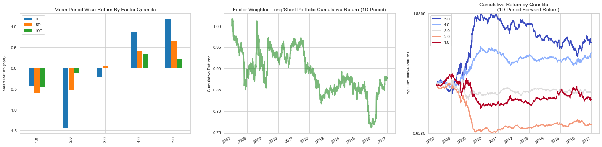

Performance Analysis with Alphalens#
Imports & Settings#
import warnings
warnings.filterwarnings('ignore')
from pathlib import Path
from collections import defaultdict
from time import time
import numpy as np
import pandas as pd
import seaborn as sns
import matplotlib.pyplot as plt
from alphalens.tears import (create_returns_tear_sheet,
create_summary_tear_sheet,
create_full_tear_sheet)
from alphalens import plotting
from alphalens import performance as perf
from alphalens import utils
sns.set_style('whitegrid')
np.random.seed(42)
idx = pd.IndexSlice
DATA_STORE = Path('assets.h5')
Alphalens Analysis#
Get trade prices#
def get_trade_prices(tickers):
return (pd.read_hdf(DATA_STORE, 'quandl/wiki/prices')
.loc[idx['2006':'2017', tickers], 'adj_open']
.unstack('ticker')
.sort_index()
.shift(-1)
.tz_localize('UTC'))
trade_prices = get_trade_prices(tickers)
trade_prices.info()
<class 'pandas.core.frame.DataFrame'>
DatetimeIndex: 3020 entries, 2006-01-03 to 2017-12-29
Columns: 500 entries, A to ZION
dtypes: float64(500)
memory usage: 11.5 MB
Load factors#
factors = (pd.concat([pd.read_hdf('data.h5', 'factors/common'),
pd.read_hdf('data.h5', 'factors/formulaic')
.rename(columns=lambda x: f'alpha_{int(x):03}')],
axis=1)
.dropna(axis=1, thresh=100000)
.sort_index())
factors.info()
<class 'pandas.core.frame.DataFrame'>
MultiIndex: 1255093 entries, (A, 2007-01-04 00:00:00) to (ZION, 2016-12-29 00:00:00)
Columns: 135 entries, sector to alpha_101
dtypes: float64(124), int64(11)
memory usage: 1.3+ GB
tickers = factors.index.get_level_values('ticker').unique()
alpha = 'alpha_054'
factor = (factors[alpha]
.unstack('ticker')
.stack()
.tz_localize('UTC', level='date')
.sort_index())
Generate Alphalens input data#
factor_data = utils.get_clean_factor_and_forward_returns(factor=factor,
prices=trade_prices,
quantiles=5,
max_loss=0.35,
periods=(1, 5, 10)).sort_index()
factor_data.info()
Dropped 0.5% entries from factor data: 0.0% in forward returns computation and 0.4% in binning phase (set max_loss=0 to see potentially suppressed Exceptions).
max_loss is 35.0%, not exceeded: OK!
<class 'pandas.core.frame.DataFrame'>
MultiIndex: 1249360 entries, (2007-01-04 00:00:00+00:00, A) to (2016-12-29 00:00:00+00:00, ZION)
Data columns (total 5 columns):
1D 1249360 non-null float64
5D 1249360 non-null float64
10D 1249360 non-null float64
factor 1249360 non-null float64
factor_quantile 1249360 non-null float64
dtypes: float64(5)
memory usage: 52.4+ MB
Compute Metrics#
mean_quant_ret_bydate, std_quant_daily = perf.mean_return_by_quantile(
factor_data,
by_date=True,
by_group=False,
demeaned=True,
group_adjust=False,
)
mean_quant_rateret_bydate = mean_quant_ret_bydate.apply(
rate_of_return,
base_period=mean_quant_ret_bydate.columns[0],
)
compstd_quant_daily = std_quant_daily.apply(std_conversion,
base_period=std_quant_daily.columns[0])
alpha_beta = perf.factor_alpha_beta(factor_data,
demeaned=True)
mean_ret_spread_quant, std_spread_quant = perf.compute_mean_returns_spread(
mean_quant_rateret_bydate,
factor_data["factor_quantile"].max(),
factor_data["factor_quantile"].min(),
std_err=compstd_quant_daily,
)
mean_ret_spread_quant.mean().mul(10000).to_frame('Mean Period Wise Spread (bps)').join(alpha_beta.T).T
| 1D | 5D | 10D | |
|---|---|---|---|
| Mean Period Wise Spread (bps) | 1.616562 | 1.239560 | 0.685174 |
| Ann. alpha | -0.017286 | 0.011855 | 0.012242 |
| beta | 0.056012 | 0.053415 | 0.044731 |
Plot spread and cumulative returns#
fig, axes = plt.subplots(ncols=3, figsize=(20, 5))
mean_quant_ret, std_quantile = mean_return_by_quantile(factor_data,
by_group=False,
demeaned=True)
mean_quant_rateret = mean_quant_ret.apply(rate_of_return, axis=0,
base_period=mean_quant_ret.columns[0])
plot_quantile_returns_bar(mean_quant_rateret, ax=axes[0])
factor_returns = perf.factor_returns(factor_data)
title = "Factor Weighted Long/Short Portfolio Cumulative Return (1D Period)"
plotting.plot_cumulative_returns(factor_returns['1D'],
period='1D',
freq=pd.tseries.offsets.BDay(),
title=title,
ax=axes[1])
plotting.plot_cumulative_returns_by_quantile(mean_quant_ret_bydate['1D'],
freq=pd.tseries.offsets.BDay(),
period='1D',
ax=axes[2])
fig.tight_layout();

Create Tearsheet#
create_summary_tear_sheet(factor_data)
Quantiles Statistics
| min | max | mean | std | count | count % | |
|---|---|---|---|---|---|---|
| factor_quantile | ||||||
| 1.0 | -564576.097386 | -0.053881 | -1558.250338 | 7272.525816 | 250286 | 20.033137 |
| 2.0 | -84.567946 | -0.029206 | -2.659084 | 2.541298 | 249845 | 19.997839 |
| 3.0 | -13.157136 | -0.019221 | -1.325346 | 1.035789 | 249408 | 19.962861 |
| 4.0 | -5.569446 | -0.001684 | -0.749801 | 0.586770 | 249775 | 19.992236 |
| 5.0 | -3.371885 | 12.567973 | -0.323038 | 0.323306 | 250046 | 20.013927 |
Returns Analysis
| 1D | 5D | 10D | |
|---|---|---|---|
| Ann. alpha | -0.017 | 0.012 | 0.012 |
| beta | 0.056 | 0.053 | 0.045 |
| Mean Period Wise Return Top Quantile (bps) | 1.187 | 0.651 | 0.224 |
| Mean Period Wise Return Bottom Quantile (bps) | -0.429 | -0.599 | -0.465 |
| Mean Period Wise Spread (bps) | 1.617 | 1.240 | 0.685 |
Information Analysis
| 1D | 5D | 10D | |
|---|---|---|---|
| IC Mean | 0.002 | 0.002 | 0.002 |
| IC Std. | 0.118 | 0.114 | 0.110 |
| Risk-Adjusted IC | 0.018 | 0.018 | 0.018 |
| t-stat(IC) | 0.911 | 0.894 | 0.915 |
| p-value(IC) | 0.362 | 0.372 | 0.360 |
| IC Skew | 0.010 | 0.036 | 0.077 |
| IC Kurtosis | 0.446 | 0.559 | 0.684 |
Turnover Analysis
| 10D | 1D | 5D | |
|---|---|---|---|
| Quantile 1 Mean Turnover | 0.795 | 0.791 | 0.795 |
| Quantile 2 Mean Turnover | 0.798 | 0.798 | 0.797 |
| Quantile 3 Mean Turnover | 0.797 | 0.795 | 0.797 |
| Quantile 4 Mean Turnover | 0.800 | 0.797 | 0.798 |
| Quantile 5 Mean Turnover | 0.788 | 0.792 | 0.788 |
| 1D | 5D | 10D | |
|---|---|---|---|
| Mean Factor Rank Autocorrelation | 0.006 | 0.01 | 0.01 |
<Figure size 432x288 with 0 Axes>